<!DOCTYPE html>
<html lang="zh-tw">
    
<head>
    <meta charset="UTF-8">
    <meta name="viewport" content="width=device-width, initial-scale=1">
    <meta name="generator" content="Yee的補坑筆記">
    <title>Mac - 用zsh就是要自訂自己喜歡的樣式 - Yee的補坑筆記</title>
    <meta name="author" content="Yee">
    
        <meta name="keywords" content="laravel,docker,">
    
    
    
    <script type="application/ld+json">{"@context":"http://schema.org","@type":"BlogPosting","author":{"@type":"Person","name":"Yee","sameAs":["mailto:amung966w@gmail.com"],"image":"yee.jpeg"},"articleBody":"在某一次OS X更新之後，\n打開終端機時我就發現，多了一串文字說明…\n\n起初，沒有去暸解那段文字在說明些什麼，\n畢竟我在終端機的使用上沒有太大的環境問題，\n某天心血來朝，看一下他到底在說些什麼，有提供個網址，來去看看…什麼！！！ 居然說要改用zsh作為預設的shell，\n在之前看過一些文章，zsh裝了theme還有一些套件後，可以很酷的使用終端機，\n無奈看到要設定一些東西，我就懶懶的，畢竟要讓zsh去抓設定在bash裡的東西…\n既然官方都這樣說了，那就… 換！！！\n\n本文所採用的環境\b\n\nMax OSX 10.15\nHomebrew 2.2.5\n\n\n往下滑，官方也很貼心的附上教學，\n先到設定裡打開 使用者 &amp; 群組，\n並點左下角的鎖頭，去解鎖之後才能設定東西，之後對自身的使用者右鍵，就會出現進階設定選單，也就是官網的那個頁面，打開選單後，在shell那邊選擇zsh之後重開終端機，就切換至zsh了！!!其實切換很簡單，這不是重點，重點在裝完主題後，就會出現紅框的資訊，\n這邊我參考一篇之前收錄的文章 - 超簡單！十分鐘打造漂亮又好用的 zsh command line 環境，\n除了安裝zsh的部分跳過外，我也跟著安裝itrem2，\n該篇文章也是採用Homebrew去安裝iterm2，\n大致上的設定可以參考這篇文章進行，所以我就不再說明安裝的過程，\n參考文章內的流程如下\n\n安裝iterm2\n安裝powerline font\n安裝oh-my-zsh\n安裝powerlevel9k\n\n其中我遇到的問題是… powerline font這邊，我無法順利的安裝，\n所以突發奇想的我，去挖出了他的otf檔，powerline\n直接載下來點擊安裝到mac的字體庫中，\n接著就是參照說明打開 itren2或者treminal的設定這樣就可以選字體拉～～\n其餘主題什麼的參照該篇文章沒有太大的問題，\n設定完成後就可以讓終端機看起來更高級拉～itren2的樣式原本的terminalvscode也有，但我不知道要去哪改字體＠＠\n題外話～  \n我改用zsh的時候，沒有設定什麼，大部分的指令都可以使用，\n像是 docker-compose , composer …等\n但也是有朋友遇到要再設定一下，\n若有遇到該問題可以參考這篇\n是說Apple在說明改用zsh為預設的shell那頁也有寫到這點呢…Apple 改用zsh為預設的shell\n\n後記\n有稍微查過 zsh 與 bash的差異，\n似乎沒有太大的差異，有些指令zsh快，有些則是bash，((似乎大部分都是zsh比較快呢！\n\b也在某些文章的留言看到說，\n使用zsh並不是因為比bash快很多，而是因為他有強大的自訂功能，\n讓終端機看起來很厲害，似乎就是主題套件powerlevel9k名稱的由來呢 ＸＤ\n","dateCreated":"2020-04-03T16:51:28+08:00","dateModified":"2020-04-03T17:52:16+08:00","datePublished":"2020-04-03T16:51:28+08:00","description":"在某一次OS X更新之後，\n打開終端機時我就發現，多了一串文字說明…","headline":"Mac - 用zsh就是要自訂自己喜歡的樣式","image":[],"mainEntityOfPage":{"@type":"WebPage","@id":"https://yeeinhole.github.io/2020/04/03/mac-zsh/"},"publisher":{"@type":"Organization","name":"Yee","sameAs":["mailto:amung966w@gmail.com"],"image":"yee.jpeg","logo":{"@type":"ImageObject","url":"yee.jpeg"}},"url":"https://yeeinhole.github.io/2020/04/03/mac-zsh/","keywords":"w3HexSchool, OS X, zsh, treminal"}</script>
    <meta name="description" content="在某一次OS X更新之後， 打開終端機時我就發現，多了一串文字說明…">
<meta property="og:type" content="blog">
<meta property="og:title" content="Mac - 用zsh就是要自訂自己喜歡的樣式">
<meta property="og:url" content="https://yeeinhole.github.io/2020/04/03/mac-zsh/index.html">
<meta property="og:site_name" content="Yee的補坑筆記">
<meta property="og:description" content="在某一次OS X更新之後， 打開終端機時我就發現，多了一串文字說明…">
<meta property="og:locale" content="zh_TW">
<meta property="og:image" content="https://yeeinhole.github.io/image/zsh/bash1.png">
<meta property="og:image" content="https://yeeinhole.github.io/image/zsh/apple_info.png">
<meta property="og:image" content="https://yeeinhole.github.io/image/zsh/change1.png">
<meta property="og:image" content="https://yeeinhole.github.io/image/zsh/change2.png">
<meta property="og:image" content="https://yeeinhole.github.io/image/zsh/change3.png">
<meta property="og:image" content="https://yeeinhole.github.io/image/zsh/zsh1.png">
<meta property="og:image" content="https://yeeinhole.github.io/image/zsh/itren1.png">
<meta property="og:image" content="https://yeeinhole.github.io/image/zsh/terminal1.png">
<meta property="og:image" content="https://yeeinhole.github.io/image/zsh/itren2.png">
<meta property="og:image" content="https://yeeinhole.github.io/image/zsh/terminal2.png">
<meta property="og:image" content="https://yeeinhole.github.io/image/zsh/vscode.png">
<meta property="article:published_time" content="2020-04-03T08:51:28.000Z">
<meta property="article:modified_time" content="2020-04-03T09:52:16.914Z">
<meta property="article:author" content="Yee">
<meta property="article:tag" content="w3HexSchool">
<meta property="article:tag" content="OS X">
<meta property="article:tag" content="zsh">
<meta property="article:tag" content="treminal">
<meta name="twitter:card" content="summary">
<meta name="twitter:image" content="https://yeeinhole.github.io/image/zsh/bash1.png">
    
    
        
    
    
        <meta property="og:image" content="https://yeeinhole.github.io/assets/images/yee.jpeg"/>
    
    
    
    
    <!--STYLES-->
    
<link rel="stylesheet" href="/assets/css/style-2lqfypdcngq7rgk11flmhgs30biseha2s4rv2frat5edalqervoqqqtncnuh.min.css">

    <!--STYLES END-->
    

    

    
        
    
</head>

    <body>
        <div id="blog">
            <!-- Define author's picture -->


    
        
            
        
    

<header id="header" data-behavior="4">
    <i id="btn-open-sidebar" class="fa fa-lg fa-bars"></i>
    <div class="header-title">
        <a
            class="header-title-link"
            href="/"
            aria-label=""
        >
            Yee的補坑筆記
        </a>
    </div>
    
        
            <a
                class="header-right-picture "
                href="#about"
                aria-label="打開鏈接: /#about"
            >
        
        
            
        
        </a>
    
</header>

            <!-- Define author's picture -->


        
    

<nav id="sidebar" data-behavior="4">
    <div class="sidebar-container">
        
            <div class="sidebar-profile">
                <a
                    href="/#about"
                    aria-label="閱讀有關作者的更多信息"
                >
                    
                </a>
                <h4 class="sidebar-profile-name">Yee</h4>
                
                    <h5 class="sidebar-profile-bio"><p>Hi 我是 Yee，常常不小心就掉進坑中…</p>
</h5>
                
            </div>
        
        
            <ul class="sidebar-buttons">
            
                <li class="sidebar-button">
                    
                        <a  class="sidebar-button-link "
                             href="https://yeeinhole.github.io/"
                            title="首頁"
                        >
                    
                        <i class="sidebar-button-icon fa fa-home" aria-hidden="true"></i>
                        <span class="sidebar-button-desc">首頁</span>
                    </a>
            </li>
            
                <li class="sidebar-button">
                    
                        <a  class="sidebar-button-link "
                             href="/all-categories"
                            
                            title="分類"
                        >
                    
                        <i class="sidebar-button-icon fa fa-bookmark" aria-hidden="true"></i>
                        <span class="sidebar-button-desc">分類</span>
                    </a>
            </li>
            
                <li class="sidebar-button">
                    
                        <a  class="sidebar-button-link "
                             href="/all-tags"
                            
                            title="標籤"
                        >
                    
                        <i class="sidebar-button-icon fa fa-tags" aria-hidden="true"></i>
                        <span class="sidebar-button-desc">標籤</span>
                    </a>
            </li>
            
                <li class="sidebar-button">
                    
                        <a  class="sidebar-button-link "
                             href="/all-archives"
                            
                            title="所有文章"
                        >
                    
                        <i class="sidebar-button-icon fa fa-archive" aria-hidden="true"></i>
                        <span class="sidebar-button-desc">所有文章</span>
                    </a>
            </li>
            
                <li class="sidebar-button">
                    
                        <a  class="sidebar-button-link "
                             href="/friend"
                            
                            title="友情連結"
                        >
                    
                        <i class="sidebar-button-icon fas fa-link" aria-hidden="true"></i>
                        <span class="sidebar-button-desc">友情連結</span>
                    </a>
            </li>
            
                <li class="sidebar-button">
                    
                        <a  class="sidebar-button-link "
                             href="#about"
                            
                            title="關於"
                        >
                    
                        <i class="sidebar-button-icon fa fa-question" aria-hidden="true"></i>
                        <span class="sidebar-button-desc">關於</span>
                    </a>
            </li>
            
        </ul>
        
            <ul class="sidebar-buttons">
            
                <li class="sidebar-button">
                    
                        <a  class="sidebar-button-link " href="mailto:amung966w@gmail.com" target="_blank" rel="noopener" title="Email">
                    
                        <i class="sidebar-button-icon fa fa-envelope" aria-hidden="true"></i>
                        <span class="sidebar-button-desc">Email</span>
                    </a>
            </li>
            
        </ul>
        
    </div>
</nav>

            
            <div id="main" data-behavior="4"
                 class="
                        hasCoverMetaIn
                        ">
                
<article class="post">
    
    
        <div class="post-header main-content-wrap text-left">
    
        <h1 class="post-title">
            Mac - 用zsh就是要自訂自己喜歡的樣式
        </h1>
    
    
        <div class="post-meta">
    <time datetime="2020-04-03T16:51:28+08:00">
	
		    4月 03, 2020
    	
    </time>
    
        <span>分類 </span>
        
    <a class="category-link" href="/categories/OS-X/">OS X</a>


    
</div>

    
</div>

    
    <div class="post-content markdown">
        <div class="main-content-wrap">
            <p>在某一次OS X更新之後，</p>
<p>打開終端機時我就發現，多了一串文字說明…</p>
<a id="more"></a>
<p>起初，沒有去暸解那段文字在說明些什麼，</p>
<p>畢竟我在終端機的使用上沒有太大的環境問題，</p>
<p>某天心血來朝，看一下他到底在說些什麼，<br>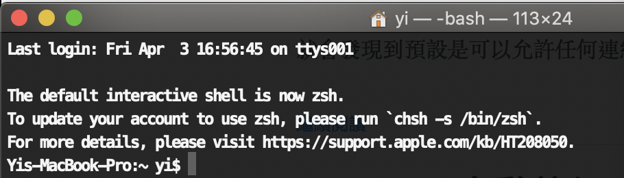<br>有提供個網址，來去看看…<br>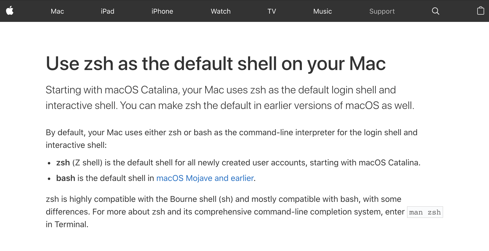<br>什麼！！！ 居然說要改用zsh作為預設的shell，</p>
<p>在之前看過一些文章，zsh裝了theme還有一些套件後，可以很酷的使用終端機，</p>
<p>無奈看到要設定一些東西，我就懶懶的，畢竟要讓zsh去抓設定在bash裡的東西…</p>
<p>既然官方都這樣說了，那就… 換！！！</p>
<hr>
<p>本文所採用的環境<br></p>
<ol>
<li>Max OSX 10.15</li>
<li>Homebrew 2.2.5</li>
</ol>
<hr>
<p>往下滑，官方也很貼心的附上教學，</p>
<p>先到設定裡打開 使用者 &amp; 群組，</p>
<p>並點左下角的鎖頭，去解鎖之後才能設定東西，<br>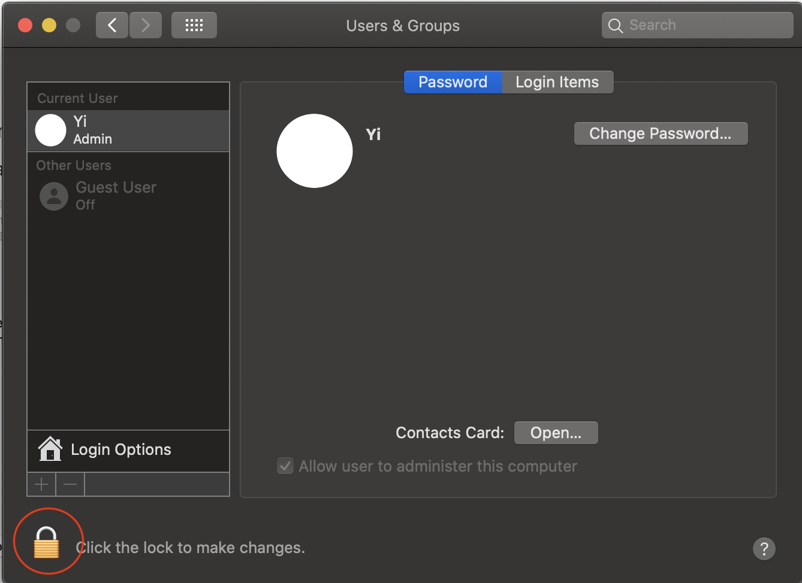<br>之後對自身的使用者右鍵，就會出現進階設定選單，也就是官網的那個頁面，<br>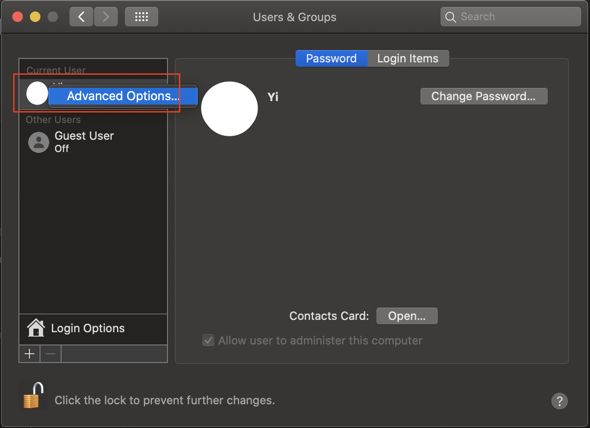<br>打開選單後，在shell那邊選擇zsh<br>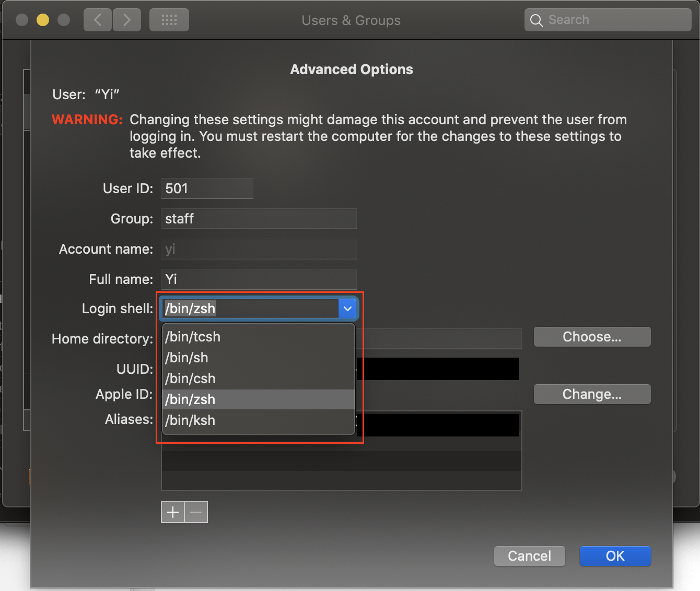<br>之後重開終端機，就切換至zsh了！!!<br>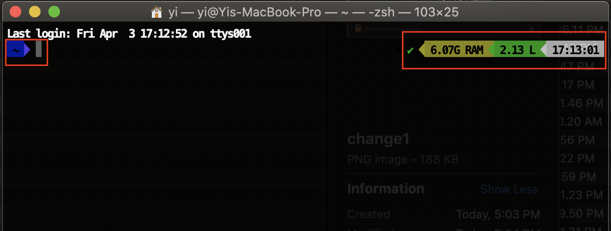<br>其實切換很簡單，這不是重點，重點在裝完主題後，就會出現紅框的資訊，</p>
<p>這邊我參考一篇之前收錄的文章 - <a href="https://medium.com/statementdog-engineering/prettify-your-zsh-command-line-prompt-3ca2acc967f" target="_blank" rel="noopener">超簡單！十分鐘打造漂亮又好用的 zsh command line 環境</a>，</p>
<p>除了安裝zsh的部分跳過外，我也跟著安裝itrem2，</p>
<p>該篇文章也是採用Homebrew去安裝iterm2，</p>
<p>大致上的設定可以參考這篇文章進行，所以我就不再說明安裝的過程，</p>
<p>參考文章內的流程如下</p>
<ol>
<li>安裝iterm2</li>
<li>安裝powerline font</li>
<li>安裝oh-my-zsh</li>
<li>安裝powerlevel9k</li>
</ol>
<p>其中我遇到的問題是… powerline font這邊，我無法順利的安裝，</p>
<p>所以突發奇想的我，去挖出了他的otf檔，<a href="https://github.com/powerline/powerline/tree/develop/font" target="_blank" rel="noopener">powerline</a></p>
<p>直接載下來點擊安裝到mac的字體庫中，</p>
<p>接著就是參照說明打開 itren2或者treminal的設定<br>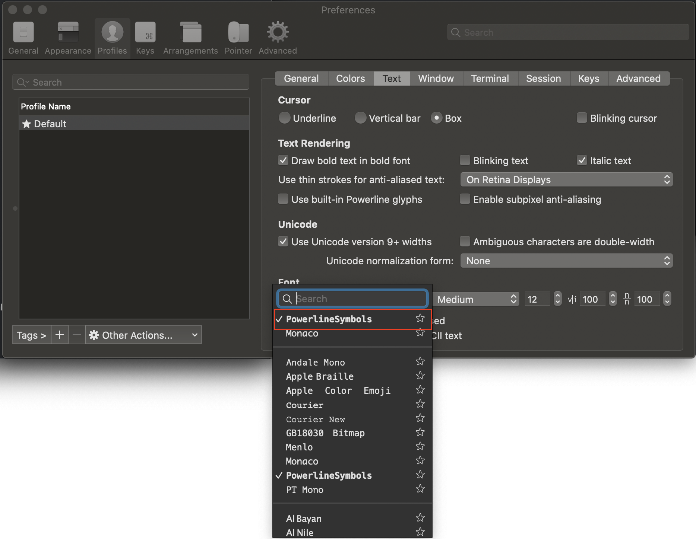<br>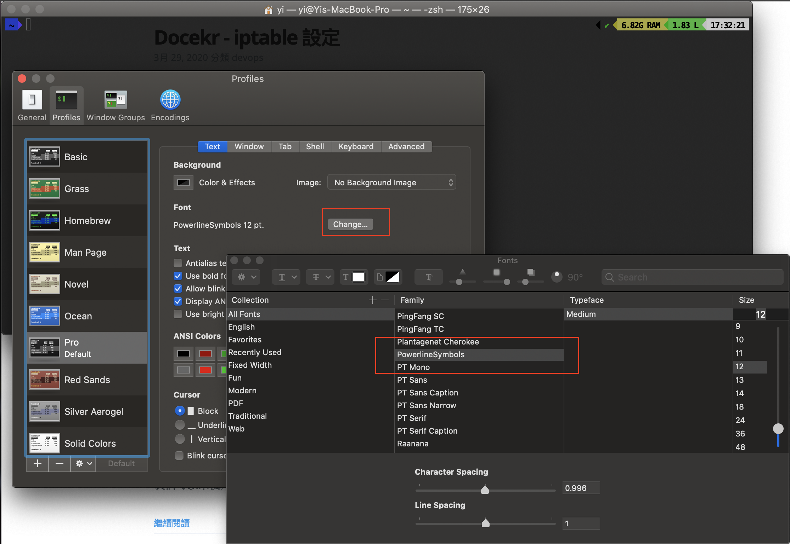<br>這樣就可以選字體拉～～</p>
<p>其餘主題什麼的參照該篇文章沒有太大的問題，</p>
<p>設定完成後就可以讓終端機看起來更高級拉～<br>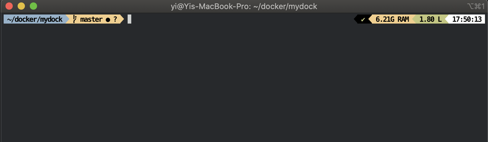<br>itren2的樣式<br>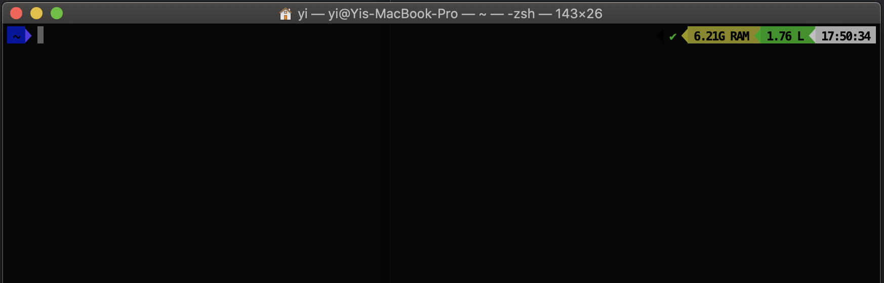<br>原本的terminal<br>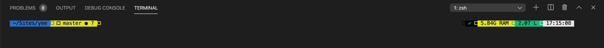<br>vscode也有，但我不知道要去哪改字體＠＠</p>
<p>題外話～  </p>
<p>我改用zsh的時候，沒有設定什麼，大部分的指令都可以使用，</p>
<p>像是 docker-compose , composer …等</p>
<p>但也是有朋友遇到要再設定一下，</p>
<p>若有遇到該問題可以<a href="http://to-u.xyz/2016/08/07/zsh-bash/" target="_blank" rel="noopener">參考這篇</a></p>
<p>是說Apple在說明改用zsh為預設的shell那頁也有寫到這點呢…<br><a href="https://support.apple.com/en-us/HT208050" target="_blank" rel="noopener">Apple 改用zsh為預設的shell</a></p>
<hr>
<p>後記</p>
<p>有稍微查過 zsh 與 bash的差異，</p>
<p>似乎沒有太大的差異，有些指令zsh快，有些則是bash，<br>((似乎大部分都是zsh比較快呢！</p>
<p>也在某些文章的留言看到說，</p>
<p>使用zsh並不是因為比bash快很多，而是因為他有強大的自訂功能，</p>
<p>讓終端機看起來很厲害，似乎就是主題套件powerlevel9k名稱的由來呢 ＸＤ</p>

            


        </div>
    </div>
    <div id="post-footer" class="post-footer main-content-wrap">
        
            <div class="post-footer-tags">
                <span class="text-color-light text-small">標籤</span><br/>
                
    <a class="tag tag--primary tag--small t-link" href="/tags/OS-X/" rel="tag">OS X</a> <a class="tag tag--primary tag--small t-link" href="/tags/treminal/" rel="tag">treminal</a> <a class="tag tag--primary tag--small t-link" href="/tags/w3HexSchool/" rel="tag">w3HexSchool</a> <a class="tag tag--primary tag--small t-link" href="/tags/zsh/" rel="tag">zsh</a>

            </div>
        
        
            <div class="post-actions-wrap">
    <nav>
        <ul class="post-actions post-action-nav">
            <li class="post-action">
                
                    <a
                        class="post-action-btn btn btn--disabled"
                        aria-hidden="true"
                    >
                        
                        <i class="fa fa-angle-left" aria-hidden="true"></i>
                        <span class="hide-xs hide-sm text-small icon-ml">上一篇</span>
                    </a>
            </li>
            <li class="post-action">
                
                    
                <a
                    class="post-action-btn btn btn--default tooltip--top"
                    href="/2020/03/29/docker-iptable/"
                    data-tooltip="Docekr - iptable 設定"
                    aria-label="下一篇: Docekr - iptable 設定"
                >
                    
                        <span class="hide-xs hide-sm text-small icon-mr">下一篇</span>
                        <i class="fa fa-angle-right" aria-hidden="true"></i>
                    </a>
            </li>
        </ul>
    </nav>
    <ul class="post-actions post-action-share">
        <li class="post-action hide-lg hide-md hide-sm">
            <a
                class="post-action-btn btn btn--default btn-open-shareoptions"
                href="#btn-open-shareoptions"
                aria-label="Diesen Beitrag teilen"
            >
                <i class="fa fa-share-alt" aria-hidden="true"></i>
            </a>
        </li>
        
            
            
            <li class="post-action hide-xs">
                <a
                    class="post-action-btn btn btn--default"
                    target="new" href="https://www.facebook.com/sharer/sharer.php?u=https://yeeinhole.github.io/2020/04/03/mac-zsh/"
                    title="分享到 Facebook"
                    aria-label="分享到 Facebook"
                >
                    <i class="fab fa-facebook" aria-hidden="true"></i>
                </a>
            </li>
        
            
            
            <li class="post-action hide-xs">
                <a
                    class="post-action-btn btn btn--default"
                    target="new" href="https://twitter.com/intent/tweet?text=https://yeeinhole.github.io/2020/04/03/mac-zsh/"
                    title="分享到 Twitter"
                    aria-label="分享到 Twitter"
                >
                    <i class="fab fa-twitter" aria-hidden="true"></i>
                </a>
            </li>
        
            
            
            <li class="post-action hide-xs">
                <a
                    class="post-action-btn btn btn--default"
                    target="new" href="https://plus.google.com/share?url=https://yeeinhole.github.io/2020/04/03/mac-zsh/"
                    title="分享到 Google+"
                    aria-label="分享到 Google+"
                >
                    <i class="fab fa-google-plus" aria-hidden="true"></i>
                </a>
            </li>
        
        
            
        
        <li class="post-action">
            
                <a class="post-action-btn btn btn--default" href="#" aria-label="Nach oben">
            
                <i class="fa fa-list" aria-hidden="true"></i>
            </a>
        </li>
    </ul>
</div>


        
        
            
        
    </div>
</article>


                <footer id="footer" class="main-content-wrap">
    <span class="copyrights">
        Copyrights &copy; 2020 Yee. All Rights Reserved.
    </span>
</footer>

            </div>
            
                <div id="bottom-bar" class="post-bottom-bar" data-behavior="4">
                    <div class="post-actions-wrap">
    <nav>
        <ul class="post-actions post-action-nav">
            <li class="post-action">
                
                    <a
                        class="post-action-btn btn btn--disabled"
                        aria-hidden="true"
                    >
                        
                        <i class="fa fa-angle-left" aria-hidden="true"></i>
                        <span class="hide-xs hide-sm text-small icon-ml">上一篇</span>
                    </a>
            </li>
            <li class="post-action">
                
                    
                <a
                    class="post-action-btn btn btn--default tooltip--top"
                    href="/2020/03/29/docker-iptable/"
                    data-tooltip="Docekr - iptable 設定"
                    aria-label="下一篇: Docekr - iptable 設定"
                >
                    
                        <span class="hide-xs hide-sm text-small icon-mr">下一篇</span>
                        <i class="fa fa-angle-right" aria-hidden="true"></i>
                    </a>
            </li>
        </ul>
    </nav>
    <ul class="post-actions post-action-share">
        <li class="post-action hide-lg hide-md hide-sm">
            <a
                class="post-action-btn btn btn--default btn-open-shareoptions"
                href="#btn-open-shareoptions"
                aria-label="Diesen Beitrag teilen"
            >
                <i class="fa fa-share-alt" aria-hidden="true"></i>
            </a>
        </li>
        
            
            
            <li class="post-action hide-xs">
                <a
                    class="post-action-btn btn btn--default"
                    target="new" href="https://www.facebook.com/sharer/sharer.php?u=https://yeeinhole.github.io/2020/04/03/mac-zsh/"
                    title="分享到 Facebook"
                    aria-label="分享到 Facebook"
                >
                    <i class="fab fa-facebook" aria-hidden="true"></i>
                </a>
            </li>
        
            
            
            <li class="post-action hide-xs">
                <a
                    class="post-action-btn btn btn--default"
                    target="new" href="https://twitter.com/intent/tweet?text=https://yeeinhole.github.io/2020/04/03/mac-zsh/"
                    title="分享到 Twitter"
                    aria-label="分享到 Twitter"
                >
                    <i class="fab fa-twitter" aria-hidden="true"></i>
                </a>
            </li>
        
            
            
            <li class="post-action hide-xs">
                <a
                    class="post-action-btn btn btn--default"
                    target="new" href="https://plus.google.com/share?url=https://yeeinhole.github.io/2020/04/03/mac-zsh/"
                    title="分享到 Google+"
                    aria-label="分享到 Google+"
                >
                    <i class="fab fa-google-plus" aria-hidden="true"></i>
                </a>
            </li>
        
        
            
        
        <li class="post-action">
            
                <a class="post-action-btn btn btn--default" href="#" aria-label="Nach oben">
            
                <i class="fa fa-list" aria-hidden="true"></i>
            </a>
        </li>
    </ul>
</div>


                </div>
                
    <div id="share-options-bar" class="share-options-bar" data-behavior="4">
        <i id="btn-close-shareoptions" class="fa fa-times"></i>
        <ul class="share-options">
            
                
                
                <li class="share-option">
                    <a
                        class="share-option-btn"
                        target="new"
                        href="https://www.facebook.com/sharer/sharer.php?u=https://yeeinhole.github.io/2020/04/03/mac-zsh/"
                        aria-label="分享到 Facebook"
                    >
                        <i class="fab fa-facebook" aria-hidden="true"></i><span>分享到 Facebook</span>
                    </a>
                </li>
            
                
                
                <li class="share-option">
                    <a
                        class="share-option-btn"
                        target="new"
                        href="https://twitter.com/intent/tweet?text=https://yeeinhole.github.io/2020/04/03/mac-zsh/"
                        aria-label="分享到 Twitter"
                    >
                        <i class="fab fa-twitter" aria-hidden="true"></i><span>分享到 Twitter</span>
                    </a>
                </li>
            
                
                
                <li class="share-option">
                    <a
                        class="share-option-btn"
                        target="new"
                        href="https://plus.google.com/share?url=https://yeeinhole.github.io/2020/04/03/mac-zsh/"
                        aria-label="分享到 Google+"
                    >
                        <i class="fab fa-google-plus" aria-hidden="true"></i><span>分享到 Google+</span>
                    </a>
                </li>
            
        </ul>
    </div>


            
        </div>
        


    
        
    

<div id="about">
    <div id="about-card">
        <div id="about-btn-close">
            <i class="fa fa-times"></i>
        </div>
        
            
        
            <h4 id="about-card-name">Yee</h4>
        
            <div id="about-card-bio"><p>Hi 我是 Yee，常常不小心就掉進坑中…</p>
</div>
        
        
            <div id="about-card-job">
                <i class="fa fa-briefcase"></i>
                <br/>
                <p>後端工程師 X 數據分系</p>

            </div>
        
        
            <div id="about-card-location">
                <i class="fa fa-map-marker-alt"></i>
                <br/>
                Taiwan
            </div>
        
    </div>
</div>

        
        
<div id="cover" style="background-image:url('/assets/images/mybg.jpg');"></div>
        <!--SCRIPTS-->

<script src="/assets/js/script-8jejpetz5mxyxxmlbiz3r2lqf5sdh34epoqgvwjmadigq9cpmb2rdlngp8ka.min.js"></script>

<!--SCRIPTS END-->


    


    </body>
</html>
